This is my answer to the question "How does generative AI appear in my life?" I sat down and thought about what I had done with, and what I had seen about, generative AI over the past week or so.
I then:
- Took or found relevant photos
- Took screenshots
- Wrote captions for them
What is below is most of what I captured.
Can you do the same sort of thing?
The thinking partner
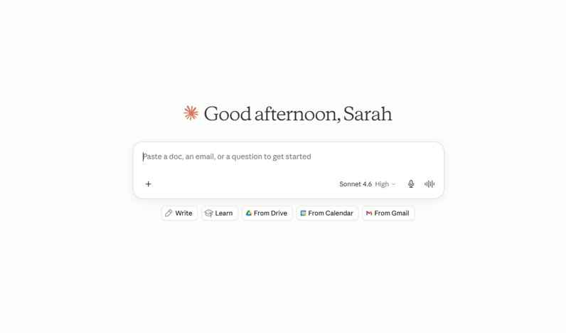
I work alone most of the time. My research involves a lot of "thinky" work — half-formed ideas that need a lot of prodding before I know what I actually think. When there aren't people around, Claude has become the thing I argue with.
It doesn't give me the answer. But the act of explaining something to something that responds is often enough to find what I'm actually trying to say.
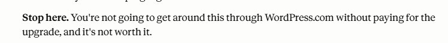
But you know what, you really have to be aware what you're talking to and what you're asking. This screenshot sums it up. I was convinced I could figure out a solution to this. This particular Claude model told me it could not be done. 20 minutes later, a more advanced model, and in Claude Code (see below for what that is)? Totally solved. A constant reminder that this is a tool you need to know how to use, which means using different approaches for different things.
What's on my plate this morning
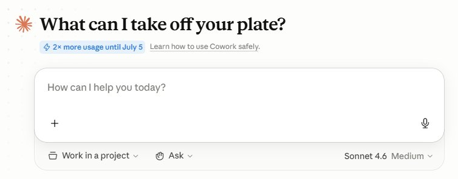
Cowork summarises my personal email every morning, picks out news and writing relevant to my research, and flags things I need to act on. "What can I take off your plate?" — again with the anthropomorphism. In this case though, perhaps it's less clear what Cowork is supposed to do?
This one is mostly useful. When it works, it means I start the day with a clear picture of what actually needs attention. But it does not always work.
What can I make with this?

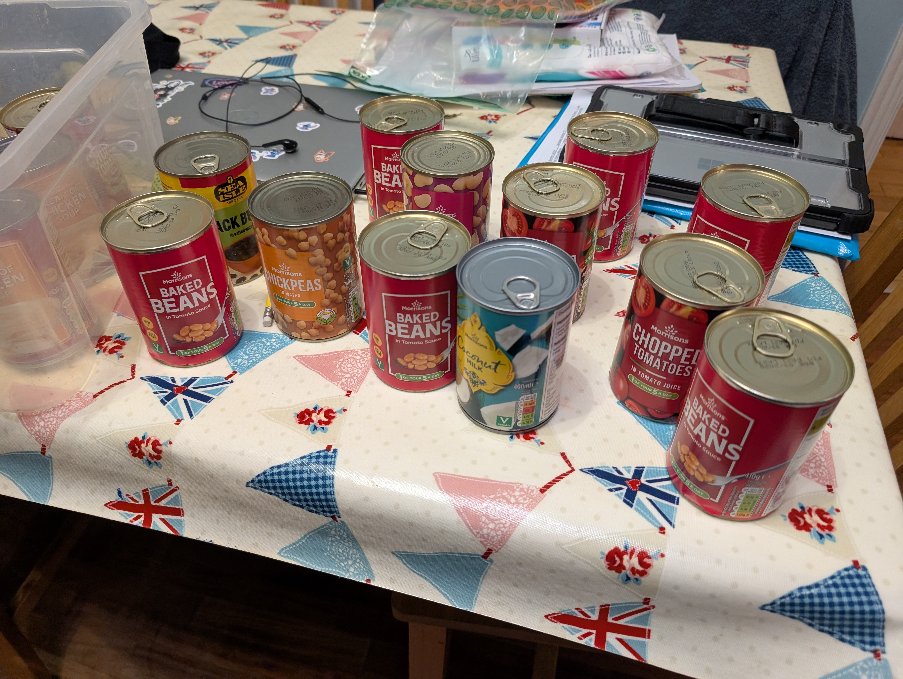
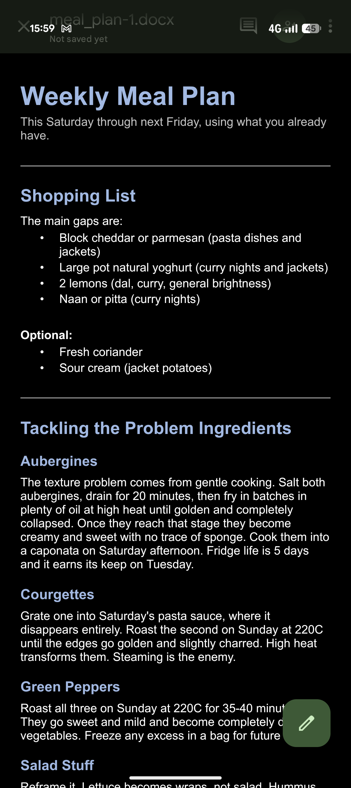
This is probably the best use of generative AI for me right now. And it works pretty well because it's pattern-matching on pattern-matching. I take a photo of my veg drawer, and it knows what the vegetables look like. And then it has the list of vegetables, and tins, and whatever, to tell me what I can cook with it.
The meal plan it generates is actually quite good. I tell it how many meals, how much time we have to cook, and any foods that the family don't really like. It saves me time on stuff I don't have much time for.
When it really works
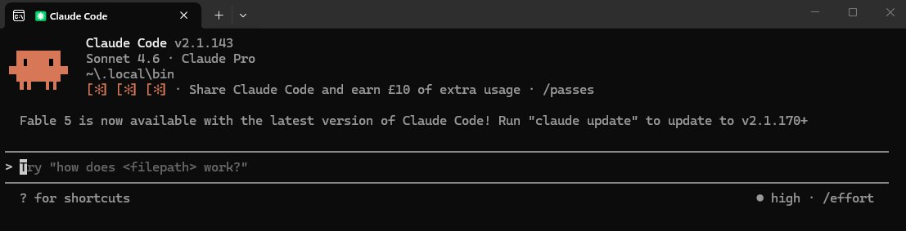
I never learned how to code in any meaningful way. But I need to make computers do things. For this research I needed to collect news articles about AI and young people from 32 different outlets across 10 countries. Done manually, this would have taken weeks.
I described what I needed. Claude Code wrote the script. Here's what it was searching for:
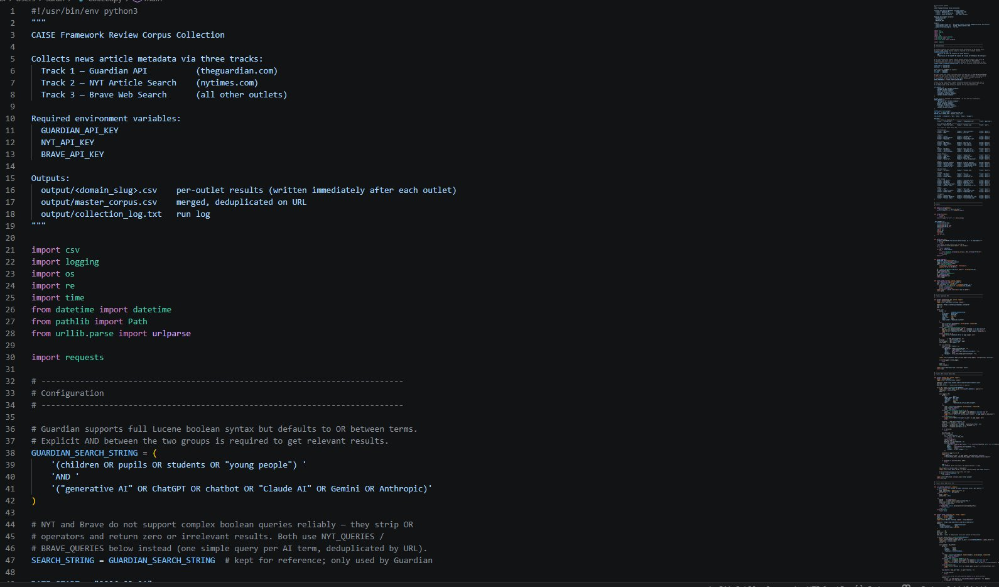
And here's what came back:

1,460 articles from 32 outlets across 10 countries. 8 minutes and 36 seconds from pressing go to having the data.
The one that doesn't work
I work at organisations that use Microsoft Office, which means Copilot for work email — not Claude. I tried to ask it to do what Cowork does for my personal inbox: scan my emails and tell me what needs a response.

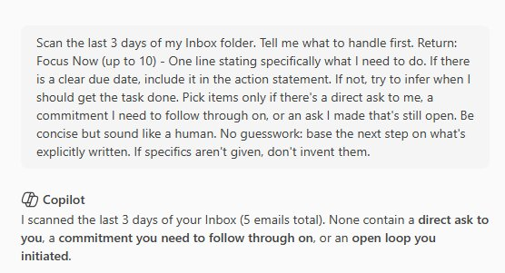
I messaged my husband. His response:
"Do you ever wonder what fraction of AI resources are used up by precisely that interaction?"
Yes. Frequently. What a waste.
The one that makes me a bit uncomfortable
My husband has discovered that AI image generation can get things out of his head and into the world. He describes it as a way of externalising the visual thinking that was already there but had no route out. It brings him genuine joy.
He sent me these from Gemini. Our dog. Himself. Both rendered in the style of something very specific.

This feels far more icky to me than text-based stuff. It shouldn't; I am perfectly aware that the ick should be there for both. In both cases, the outputs that are returned are only there because of being trained on significant amounts of data that has not been paid for, or that the creator has agreed to. With a chat-based tool, the question of what data the model was trained on, and how it was obtained, is easy to set aside. The output is just text. It's easy to move on; after all, it's a mashup and typically, you're not going to see the precise thing that reminds you of the scraping/copyright issues.
With image generation, particularly when it produces something this clearly derivative of a specific copyright-protected visual style, that gets harder. Gemini does not care about Bluey's creators or Aardman. It has consumed their work and will reproduce its aesthetic on request, for free, at scale, without any indication this is a problem.
I'm not sure what to do with the fact that I need to see the picture to be reminded of this particular cost.
The ambient noise
I dislike most tech coverage from most major news organisations. Their tech coverage is relentless doom; their approach to children and technology makes me want to break things. I scroll through it most days anyway because understanding the discourse is part of the job — but I find myself wanting to avoid it more and more.
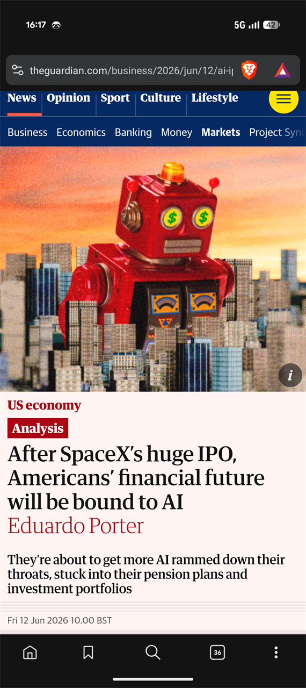
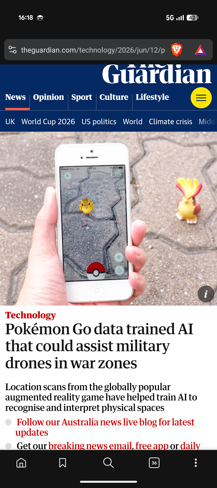
In the background: a podcast about the building of the Colossus data centre — the biggest single AI infrastructure bet in history. I'm seven minutes from the end and have been putting it off because a) what good has come from anything linked to Grok and b) what do I do with the information? Do I know enough to keep it in context?
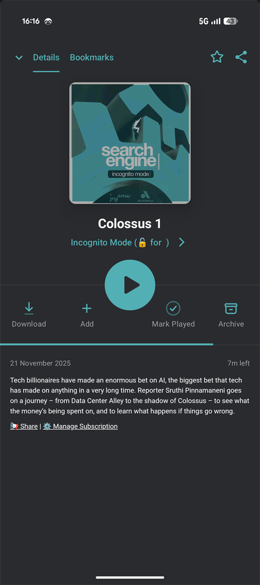
And then there's Hacks and The Pitt. AI has turned up in my favourite TV shows as unalloyed evil. A while back I was studying ransomware, and that was a storyline everywhere too. I did shout at the screen in the Hacks episode referenced here. Just like my concern about the Search Engine podcast, I know there's more nuance to the argument than "AI datacentres are the problem". Datacentres? Probably. But how many are Colossus, vs how many are helping us stream...well...Hacks?
It was actually an interesting storyline though. The much older comedian character was completely unbothered — AI would only ever be a cheap imitation of her. The younger character was the one in crisis. That's the bit I've decided I'll remember!
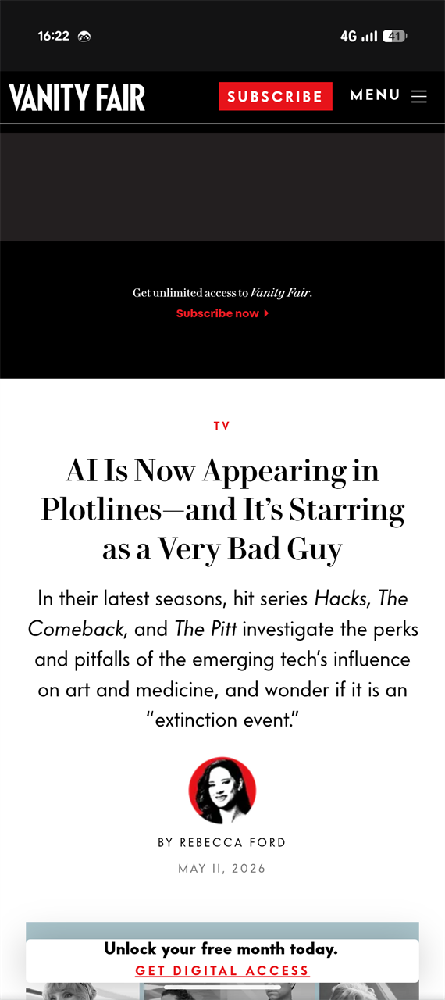
What my professional world looks like right now
Alongside the tools and the cultural noise, there's a specific professional landscape I'm embedded in. Everyone, everywhere has opinions, and they typically end up in reports and soundbites.
Always, everywhere, you have to be aware who is reporting what, why, and how. Everyone has an agenda, and you can use statistics to tell any story you like.
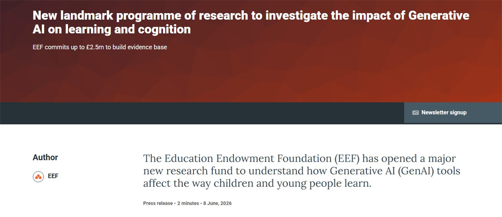
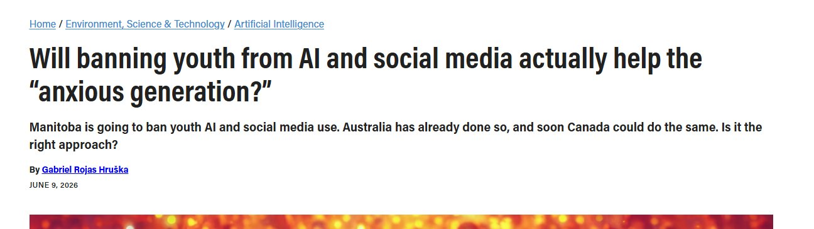
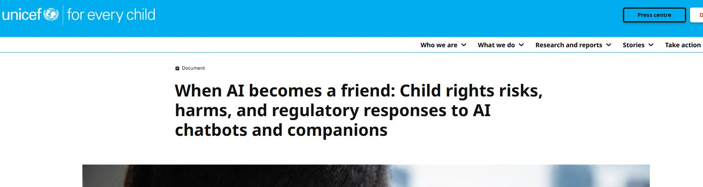
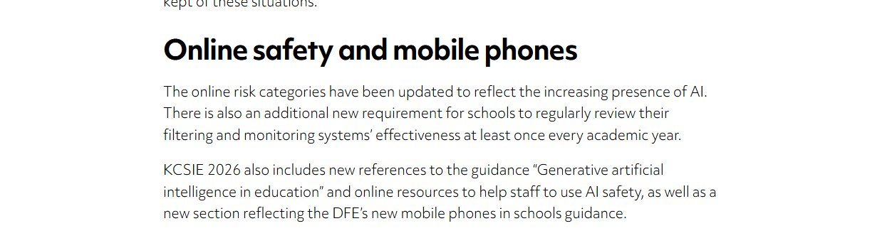